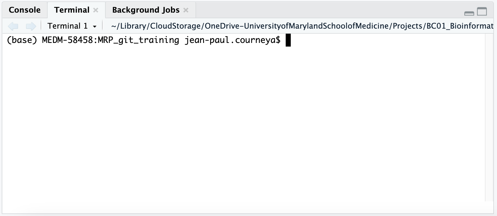

1 Introduction to R and RStudio
The following chapter will provide you with a hands on opportunity to familiarize yourself with RStudio. Learning RStudio is a big topic and we will not be able to cover everything, by the end of this session we hope that you will feel comfortable starting to use R on your own for working with Git and GitHub.
1.1 Learning Objectives
- Navigate RStudio
- Use Posit Cloud (formerly RStudio Cloud)
1.2 Why learn R?
R is free, open-source, and cross-platform. Anyone can inspect the source code to see how R works. Because of this transparency, there is less chance for mistakes, and if you (or someone else) find some, you can report and fix bugs. Because R is open source and is supported by a large community of developers and users, there is a very large selection of third-party add-on packages which are freely available to extend R’s native capabilities.
R code is great for reproducibility. Reproducibility is when someone else (including your future self) can obtain the same results from the same dataset when using the same analysis. R integrates with other tools to generate manuscripts from your code. If you collect more data, or fix a mistake in your dataset, the figures and the statistical tests in your manuscript are updated automatically.
R relies on a series of written commands, not on remembering a succession of pointing and clicking. If you want to redo your analysis because you collected more data, you don’t have to remember which button you clicked in which order to obtain your results; you just have to run your script again.
R is interdisciplinary and extensible With 10,000+ packages that can be installed to extend its capabilities, R provides a framework that allows you to combine statistical approaches from many scientific disciplines to best suit the analytical framework you need to analyze your data. For instance, R has packages for image analysis, GIS, time series, population genetics, and a lot more.
R works on data of all shapes and sizes. The skills you learn with R scale easily with the size of your dataset. Whether your dataset has hundreds or millions of lines, it won’t make much difference to you. R is designed for data analysis. It comes with special data structures and data types that make handling of missing data and statistical factors convenient. R can connect to spreadsheets, databases, and many other data formats, on your computer or on the web.
R produces high-quality graphics. The plotting functionalities in R are endless, and allow you to adjust any aspect of your graph to convey most effectively the message from your data.
R has a large and welcoming community. Thousands of people use R daily. Many of them are willing to help you through mailing lists and websites such as Stack Overflow, or on the RStudio community. Questions which are backed up with short, reproducible code snippets are more likely to attract knowledgeable responses.
1.3 Starting out in R
R is both a programming language and an interactive environment for data exploration and statistics.(R Core Team 2022)
Working with R is primarily text-based. The basic mode of use for R is that the user provides commands in the R language and then R computes and displays the result.
1.3.1 Downloading, Installing and Running R
Download
R can be downloaded from CRAN (The Comprehensive R Archive Network) for Windows, Linux, or Mac.
Install
Installation of R is like most software packages and you will be guided. Should you have any issues or need help you can refer to R Installation and Administration
Running
R can be launched from your software or applications launcher or When working at a command line on UNIX or Windows, the command R can be used for starting the main R program in the form R
You will see a console similar to this appear:
While it is possible to work solely through the console or using a command line interface, the ideal environment to work in R is RStudio.
1.3.2 RStudio
RStudio is a user interface for working with R. It is called an Integrated Development Environment (IDE): a piece of software that provides tools to make programming easier. RStudio acts as a sort of wrapper around the R language. You can use R without RStudio, but it’s much more limiting. RStudio makes it easier to import datasets, create and write scripts, and makes using R much more effective. RStudio is also free and open source. To function correctly, RStudio needs R and therefore both need to be installed on your computer. For this training we’ll be using a browser based version called Posit Cloud (see directions in the Posit Cloud section below.
RStudio interface is conveniently organized into four divisions called “panes”.
The Default Layout is:
- Top Left - Source: your scripts and documents
- Bottom Left - Console: what R would look and be like without RStudio
- Top Right - Environment/History: look here to see what you have done
- Bottom Right - Files and more: see the contents of the project/working directory here, like your Script.R file

The placement of these panes and their content can be customized (see menu, Tools -> Global Options -> Pane Layout)
1.3.3 Posit Cloud (formerly RStudio Cloud)
Posit Cloud is a web browser-based version of RStudio. It will allow you to use RStudio without needing to download anything to your computer. You can also easily share your R projects with others. To use Posit Cloud a user account is required. While we recommend downloading RStudio for routine R programming use, we will be using Posit Cloud for this training.
To access Posit Cloud
- In a new browser window or tab create your account at https://posit.cloud/plans/free.
- Log in with Goolge or GitHub or however you choose!
- Create a new project.
- Write amazing code!
1.4 Using this book
For these instructions code will appear in the gray box as follows:
fake codeTo run the code you can copy and paste the code and run it in your RStudio session console at the prompt > which looks like a greater than symbol.
> fake codeThe code can also be added to an R Script to be run.
When the code is run in RStudio the console prints out results like so:
[1] ResultIn this tutorial results from code will appear like so:
## [1] Result1.5 Working in the Console
The console is an interactive environment for RStudio, click on the “Console” pane, type 3 + 3 and press enter. R displays the result of the calculation.
3 + 3[1] 6+ is called an operator. R has the operators you would expect for for basic mathematics:
Arithmetic operators
| operator | meaning |
|---|---|
| + | plus |
| - | minus |
| * | times |
| / | divided by |
| ^ | exponent |
Logical Operators
| operator | meaning |
|---|---|
| == | exactly equal |
| != | not equal to |
| < | less than |
| <= | less than or equal to |
| > | greater than |
| >= | greater than or equal to |
| x|y | x or y |
| x&y | x and y |
| !x | not x |
Spaces can be used to make code easier to read.
2 * 2 == 4[1] TRUEYou can also run commands in the consile for working with your computers filesystem.
getwd() # similar to UNIX PWD1.6 Working in the Terminal
The embedded Terminal in RStudio is a command-line interface within the IDE, allowing users to execute system commands and interact with the operating system directly.
It shares the same working directory as the RStudio session and supports various commands for file management, package installation, and more.
Integration into the IDE streamlines workflows by eliminating the need to switch between applications, enhancing productivity and enabling seamless interaction between R programming and system administration tasks.
